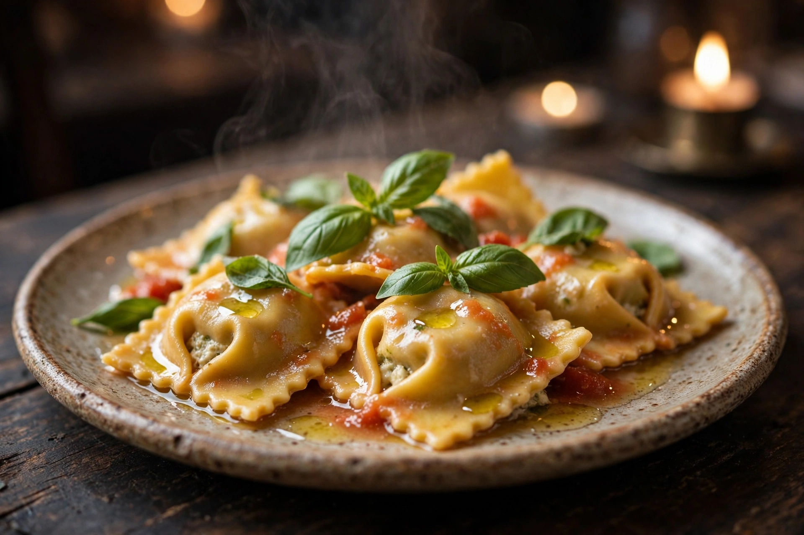
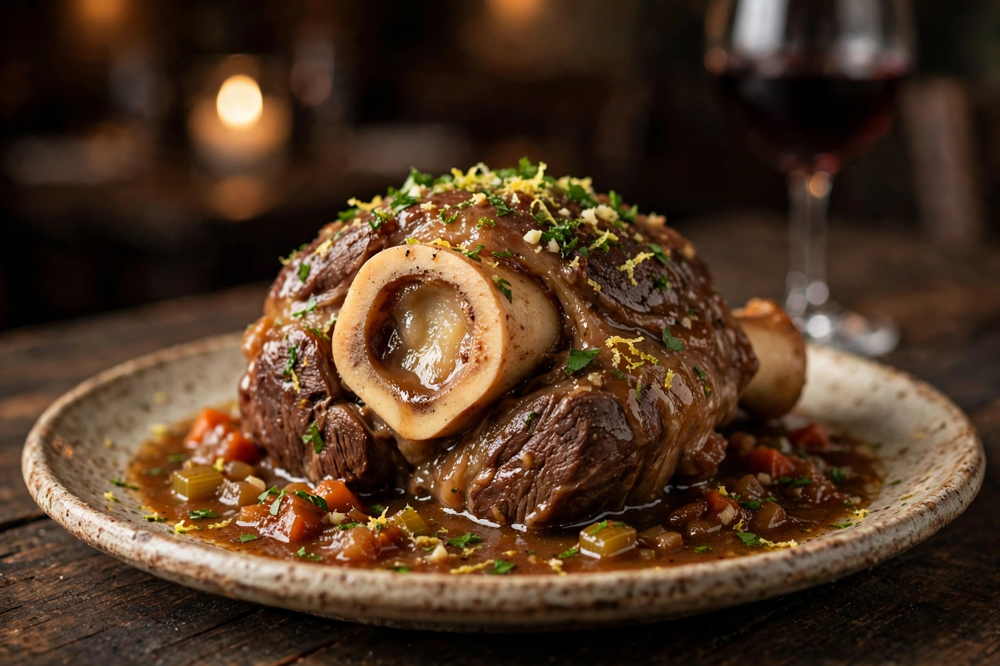
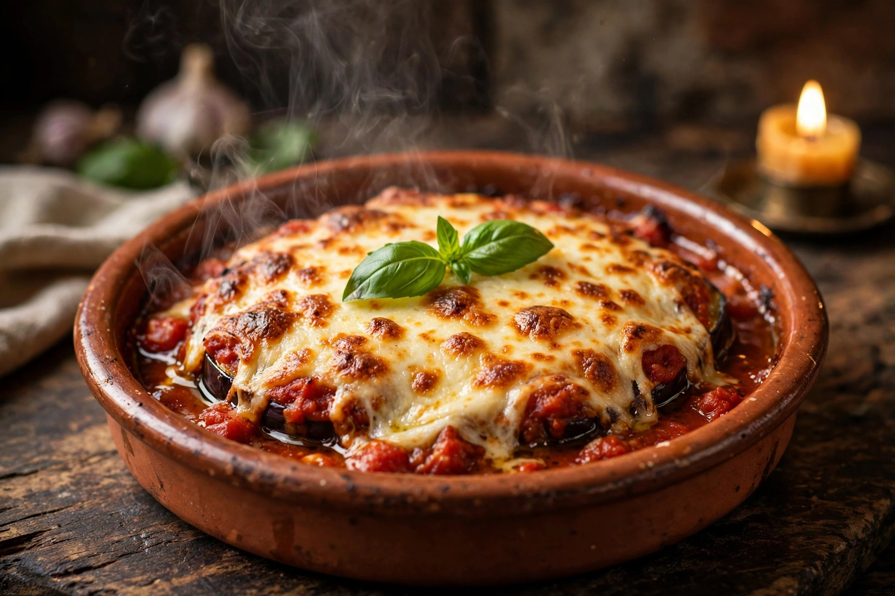
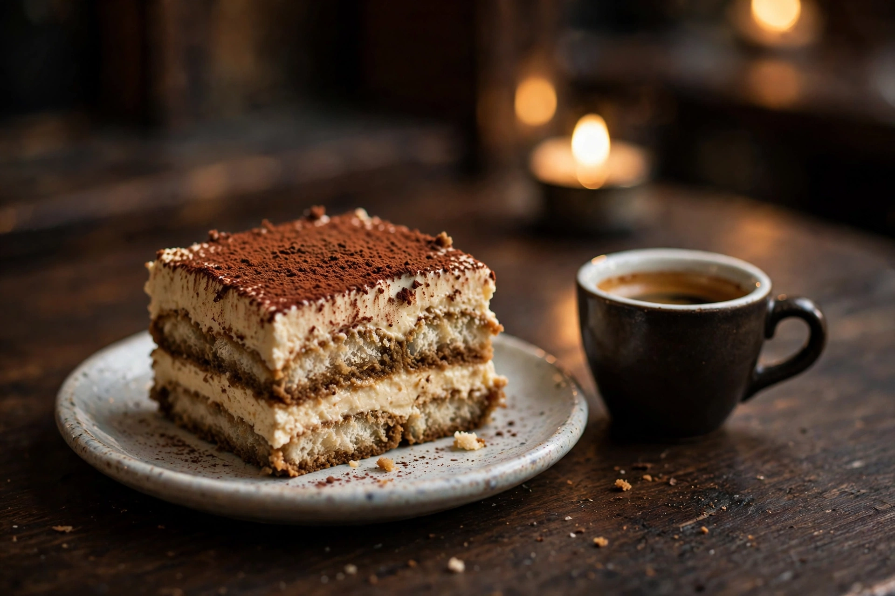
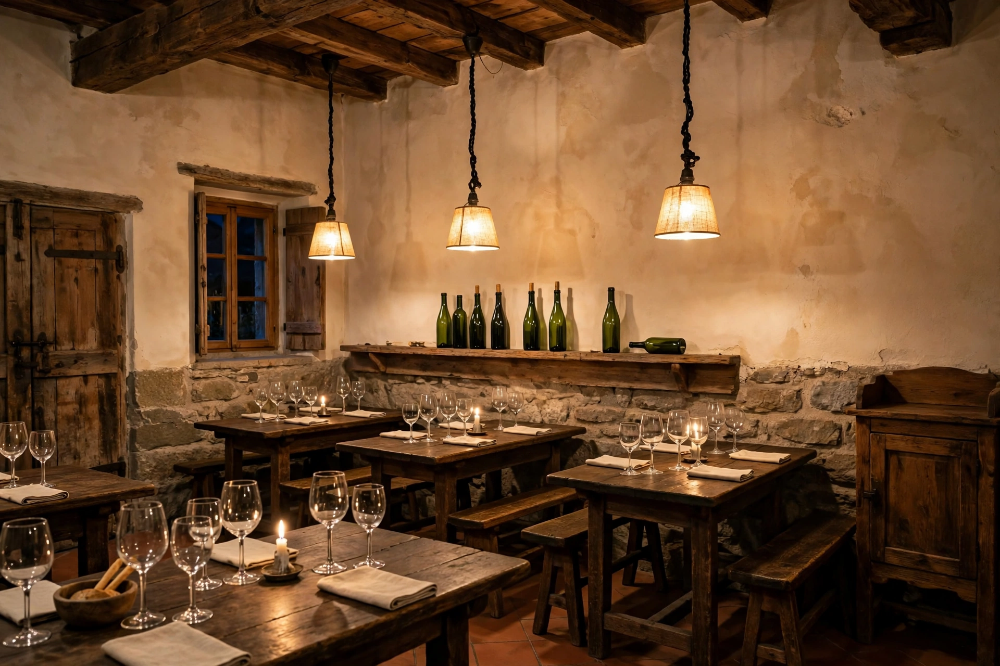

Ravioli al basilico
Pasta fresca fatta in casa, con basilico e ingredienti scelti: il primo che gli ospiti citano più spesso.
Stasera in tavola: Ravioli al basilico.
Una carta breve e curata, piatti preparati al momento con ingredienti scelti e un cortile interno dove la cena va a lume di candela, in una via tranquilla della Città Vecchia.
Sala piccola e cortile ambito: la prenotazione per telefono è consigliata.
Quattro piatti che tornano nelle recensioni e sulle tavole del cortile: la pasta fatta in casa, le lunghe cotture e il dolce che chiude la serata.

Pasta fresca fatta in casa, con basilico e ingredienti scelti: il primo che gli ospiti citano più spesso.

La lunga cottura della tradizione, con la sua salsa ricca e il midollo: un piatto da serata lenta.

Melanzane, pomodoro e formaggio gratinati al forno: il piatto vegetariano che convince tutti.

Il finale classico, fatto in casa, con il caffè: la chiusura giusta per la cena in cortile.
Carne alla griglia e patate al forno: semplice, abbondante, da condividere o no.
La variante profumata dei nostri ravioli, con un tocco di arancia.
Generosa, con la salsa fatta in casa che gli ospiti lodano sempre.
Per chiudere con carattere: il gelato alla grappa, intenso e freddo.

Un'osteria storica della Città Vecchia, con una nuova gestione dal 2025.
In Via Borghese 20, nella Città Vecchia di Locarno, questa osteria serve la cena da anni ed è un indirizzo che i locarnesi si passano a voce. Dal novembre 2025 è passata alla gestione Ghilardi, che l'ha rilevata con un'idea precisa.
L'idea, nelle parole della gestione, è una cucina più essenziale e curata: pochi piatti, preparati al momento, con ingredienti di qualità. Una carta pensata non per i turisti, ma per chi vuole mangiare bene.
Dentro c'è la sala dell'osteria; fuori, un cortile interno dove la cena va a lume di candela. Le porzioni sono generose e l'accoglienza è quella di casa: ci si siede, si ordina un Merlot ticinese e la serata prende il suo tempo.
281 recensioni raccontano la stessa cosa: ingredienti di qualità, piatti preparati al momento e porzioni generose.
Quando il tempo lo permette, la cena è nel cortile interno, a lume di candela: il posto più amato dell'osteria.
La sala è piccola e il cortile ha pochi tavoli. La prenotazione si fa per telefono, senza sistemi e senza attese.
In carta ci sono piatti vegetariani come la parmigiana e le bruschette, e la cucina adatta volentieri i piatti quando può.
L'osteria apre quando la città si accende: dalle 16:30, dal martedì alla domenica. Il lunedì si riposa.
Da martedì a domenica, dalle 16:30: in cortile quando è stagione, in sala nelle sere fresche.
Una breve chiamata basta: concordiamo insieme giorno e ora.
Ti aspettiamo in Via Borghese 20, nella Città Vecchia, per la cena.
La carta dei vini è corta come quella dei piatti: poche etichette, scelte bene, con il Merlot del Ticino in primo piano, in rosso e nella sua versione in bianco. E per chiudere, il limoncello fatto in casa.
| Da martedì a domenica | 16:30 a 23:00 |
|---|---|
| Lunedì | Chiuso |
Orari secondo il profilo Google. Possono variare: per sicurezza, chiamaci.
Si cena in sala o nel cortile interno. I cani sono i benvenuti.
Piazza Grande, la piazza e la Città Vecchia sono a pochi passi: l'osteria è in una via tranquilla, a poche decine di metri dal centro.
Stazione di Locarno, la stazione è a pochi minuti a piedi, comoda per chi arriva in treno sul Lago Maggiore.